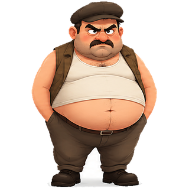

Президентски избори 2026 ·
I тур
Зареждане…
Гюров срещу Йотова
Области (МИР)
Градове
Общини
Минимум избиратели:
5000
10000
20000
30000
50000
100000
–
води Гюров

–
води Йотова
гр. Стара Загора по секции
Гюров срещу Йотова по секция
Цвят — кой води; размер — колко голяма е преднината.
Резултати в страната